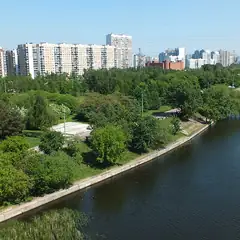
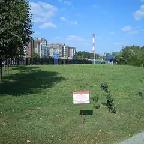
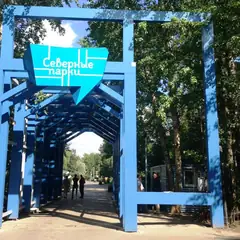
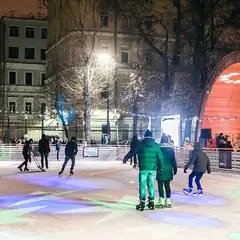
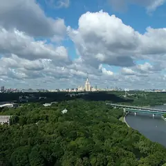
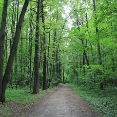
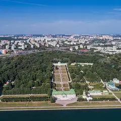
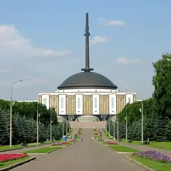
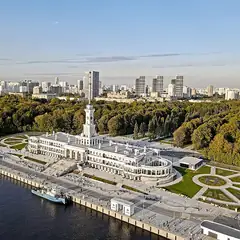

Сезон · данные на 15 октября
Куда сходить осенью в Москве
137 планов и 108 мест, где особенно красиво в сентябре и октябре: парки и усадьбы, сады и набережные — например, «Патриаршие пруды», «Чистые пруды» и «Японский сад». После прогулки — кофейня, чайная или ужин в паре минут ходьбы.
- 137 планов
- 108 мест
Осенние планы 24 из 137
- Дом-музей Пастернака · Музей · м. Боровское шоссе
- 10 минут пешкомДом творчества Переделкино · Литературный центр
- 1 минута пешкомБиблиотека · Ресторан
Дача Пастернака, прогулка среди сосен писательского городка и обед в «Библиотеке» с камином и книжными полками — почти загородный день, не уезжая из Москвы.
Открыть план: День в ПеределкинеПозвать сюда: День в Переделкине
Фото: Артём Белевич, CC BY-SA 4.0 · Wikimedia Commons
- Парк 40-летия Победы · Парк · Зеленоград — Крюково (МЦД-3)
- 27 минут пешкомBrunch Time · Кафе завтраков
Утренний круг вокруг пруда в главном парке Зеленограда, а потом Brunch Time, где драники, бенедикты и вафли с солёной карамелью подают весь день.
Открыть план: Зеленоград: пруд и завтрак весь деньПозвать сюда: Зеленоград: пруд и завтрак весь день
Фото: Sergey A. Demidov, CC BY 4.0 · Wikimedia Commons
- Сова · Кофейня · м. Волжская
- 27 минут пешкомУсадьба Люблино · Усадьба
Капучино за 150–350 ₽ в «Сове», куда можно с собакой, а потом прогулка к дворцу-ротонде и пруду усадьбы Люблино — на двоих выйдет дешевле одного ужина.
Открыть план: Кофе в «Сове» и Люблино с собакойПозвать сюда: Кофе в «Сове» и Люблино с собакой
Фото: NVO, CC BY 3.0 · Wikimedia Commons
- Андроников монастырь · Музей и монастырь · м. Площадь Ильича
- 6 минут пешкомСекрет · Приватный кинотеатр
Прогулка вокруг белых стен Андроникова монастыря, а потом приватный кинотеатр «Секрет»: свой зал с большим диваном, любой фильм и работа до шести утра.
Открыть план: Монастырь и кинозал только для васПозвать сюда: Монастырь и кинозал только для вас
Фото: A.Savin, Free Art License · Wikimedia Commons

- Парк 850-летия Москвы · Парк · м. Марьино
- 6 минут пешкомЧеддер · Пивной ресторан
Пройтись по набережной Парка 850-летия Москвы, а потом в «Чеддер»: пиво и сидр в фирменных бокалах, бургеры и трансляции — бармены расскажут про каждый сорт.
Открыть план: Набережная в Марьине и сидрПозвать сюда: Набережная в Марьине и сидр
Фото: Brateevsky, CC BY-SA 3.0 · Wikimedia Commons
- Парк Горького · Парк · м. Октябрьская
- 15 минут пешкомСтарлайт Дайнер · Американский дайнер
Вечерняя прогулка по набережной Парка Горького, а потом бургеры или завтрак среди ночи в круглосуточном «Старлайт Дайнере» у «Октябрьской».
Открыть план: Ночная набережная и дайнер 24/7Позвать сюда: Ночная набережная и дайнер 24/7
Фото: A.Savin, Free Art License · Wikimedia Commons

- Ландшафтный парк «Митино» · Парк · м. Волоколамская
- 13 минут пешкомLuna · Караоке-клуб
Круг вокруг пруда в ландшафтном парке «Митино», а потом караоке Luna: диджей, кухня и звукорежиссёр, который выставит микрофон даже новичку.
Открыть план: Парк «Митино» и караоке рядомПозвать сюда: Парк «Митино» и караоке рядом
Фото: AVRS, CC BY-SA 3.0 · Wikimedia Commons
- Патриаршие пруды · Пруд и сквер · м. Маяковская
- 1 минута пешкомКиану · Коктейльный бар
Вечерний круг вокруг Патриарших прудов, а потом маленький бар «Киану», из окна которого видно пруд: коктейли, роллы и диджей до 6 утра.
Открыть план: Патрики и бар с видом на прудПозвать сюда: Патрики и бар с видом на пруд
Фото: Dimа, CC BY-SA 3.0 · Wikimedia Commons

- Парк «Северное Тушино» · Парк · м. Планерная
- 2 минуты пешкомЛазертаг Арена «Военный бункер» · Лазертаг
Подводная лодка-музей и экраноплан в парке «Северное Тушино», а рядом — круглосуточный лазертаг в декорациях военного бункера, час игры — 1 100 ₽.
Открыть план: Подлодка и лазертаг в бункереПозвать сюда: Подлодка и лазертаг в бункере
Фото: Mardiver, CC0 · Wikimedia Commons
- Посёлок «Сокол» · Исторический посёлок · м. Сокол
- 22 минуты пешкомClara · Кофейня
Тихие улицы посёлка «Сокол» с деревянными домами 1920-х, а потом Clara у «Октябрьского Поля»: мест много, раф с лавандой и канеле — можно сидеть и говорить часами.
Открыть план: Посёлок художников и кофеПозвать сюда: Посёлок художников и кофе
Фото: A.Savin, CC BY-SA 3.0 · Wikimedia Commons
- Сиреневый сад · Сад · м. Черкизовская
- 11 минут пешкомBrancho · Кафе завтраков
Утренняя прогулка по Сиреневому саду на Щёлковском шоссе, а потом Brancho со своей пекарней: шакшука или скандинавский завтрак с пастрами.
Открыть план: Сиреневый сад и шакшукаПозвать сюда: Сиреневый сад и шакшука
Фото: Kristy2906, CC BY-SA 4.0 · Wikimedia Commons
- Сходненская чаша · Природный памятник · м. Сходненская
- 17 минут пешкомИду лесом · Кофейня в усадьбе
Вид сверху на Сходненскую чашу — природный амфитеатр в Тушине, — потом по старому парку над Сходней в «Иду лесом»: мягкие диваны, книги и завтраки.
Открыть план: Сходненская чаша и кофейня в усадьбеПозвать сюда: Сходненская чаша и кофейня в усадьбе
Фото: barmalei1971, CC BY-SA 3.0 · Wikimedia Commons
- Парк «Красная Пресня» · Парк · м. Деловой центр
- 5 минут пешкомЧаiка · Ресторан-яхта
Круг по старинному парку «Красная Пресня» с прудами и мостиками, а потом ужин при свечах на яхте «Чаiка»: в окнах река, гостиница «Украина» и огни Сити.
Открыть план: Тихий парк и ужин на яхтеПозвать сюда: Тихий парк и ужин на яхте
Фото: Akkit, CC BY-SA 3.0 · Wikimedia Commons
- Усадьба Трубецких · Парк · м. Фрунзенская
- 6 минут пешкомBlack Market · Бистро с бранчами
Неспешный круг по усадьбе Трубецких с прудом и старыми липами, а через пять минут — Black Market с драниками, лососем и сырниками; по выходным там бранчи.
Открыть план: Усадебный парк и большой завтракПозвать сюда: Усадебный парк и большой завтрак
Фото: Simm, CC BY-SA 2.5 · Wikimedia Commons
- Усадьба Люблино · Усадьба · м. Волжская
- 6 минут пешкомБлэквуд · Квест-перформанс
Сумеречная прогулка у дворца-ротонды в Люблине, а потом перформанс «Блэквуд»: старое поместье, учтивый дворецкий и выбор, у которого нет правильного ответа.
Открыть план: Усадьба Люблино и поместье БлэквудПозвать сюда: Усадьба Люблино и поместье Блэквуд
Фото: NVO, CC BY 3.0 · Wikimedia Commons
- Александровский сад · Сад · м. Александровский сад
- 12 минут пешкомСеверяне · Ресторан с завтраками и бранчами
Утро в Александровском саду до толп, а потом «Северяне» на Большой Никитской: камерный ресторан с дровяной печью открывается в 9, бранч по выходным лучше бронировать.
Открыть план: Утро у Кремля и бранч у печиПозвать сюда: Утро у Кремля и бранч у печи
Фото: Минеева Ю. (Julmin), CC BY-SA 1.0 · Wikimedia Commons
- Усадьба Измайлово · Музей-усадьба · м. Партизанская
- 12 минут пешкомImmerscape · Квест с актёрами
Прогулка по острову усадьбы Измайлово мимо Покровского собора, а потом «Запретная дверь» в Immerscape: актрисы играют с порога и выручают, если совсем страшно.
Открыть план: Царский остров и «Запретная дверь»Позвать сюда: Царский остров и «Запретная дверь»
Фото: NVO, CC BY 3.0 · Wikimedia Commons
- Сокольники · Парк · м. Сокольники
- 1 минута пешкомGreen Park · Ресторан в парке
Лучевые аллеи в золоте и выход в лес, а потом обед в ресторане прямо в парке.
Открыть план: Аллеи СокольниковПозвать сюда: Аллеи Сокольников
Фото: Alexx Zimin, CC BY-SA 4.0 · Wikimedia Commons
- Парк Горького · Парк · м. Октябрьская
- 11 минут пешкомSUBSTANCE · Бильярд-бистро
Прогулка по набережной и пара партий в бильярд-бистро SUBSTANCE.
Открыть план: Бильярд в Парке ГорькогоПозвать сюда: Бильярд в Парке Горького
Фото: A.Savin, Free Art License · Wikimedia Commons
- Патриаршие пруды · Пруд и сквер · м. Маяковская
- 1 минута пешкомERWIN.Павильон · Ресторан на пруду
Неспешный круг вокруг пруда из «Мастера и Маргариты», а потом бранч в ресторане-павильоне Erwin прямо у пруда — он открыт с 9:00.
Открыть план: Бранч на ПатрикахПозвать сюда: Бранч на Патриках
Фото: Dimа, CC BY-SA 3.0 · Wikimedia Commons
- Гоголевский бульвар · Бульвар · м. Кропоткинская
- 3 минуты пешкомИНО М2 · Гастропространство
Гоголевский бульвар и большое гастропространство в конструктивистском здании.
Открыть план: Бульвар и гастропространствоПозвать сюда: Бульвар и гастропространство
Фото: Panther, CC BY-SA 3.0 · Wikimedia Commons
- Гоголевский бульвар · Бульвар · м. Кропоткинская
- 4 минуты пешкомНитка · Русская чайная
Гоголевский бульвар под жёлтыми липами и долгий чай в отдельной комнате «Нитки».
Открыть план: Бульвар и самоварПозвать сюда: Бульвар и самовар
Фото: Panther, CC BY-SA 3.0 · Wikimedia Commons
- Чистые пруды · Бульвар и пруд · м. Чистые пруды
- 12 минут пешкомKeep · Гастробар
Круг по Чистым прудам в сумерках, потом свечи и росписи с ангелами в готическом гастробаре Keep во дворах Мясницкой.
Открыть план: Бульвары и готический ужинПозвать сюда: Бульвары и готический ужин
Фото: Vasilii Martynov, CC BY-SA 4.0 · Wikimedia Commons

- Сад им. Баумана · Сад · м. Красные Ворота
- 12 минут пешкомUrban Winery · Городская винодельня
Сад Баумана и городская винодельня, где вино делают прямо здесь.
Открыть план: Вино с производстваПозвать сюда: Вино с производства
Фото: Tsitsurskaya, CC BY-SA 4.0 · Wikimedia Commons


Где красиво осенью 24 из 108
Большой Патриарший пер.
Пруд из «Мастера и Маргариты»: скамейки, кафе вокруг, зимой — каток.
Подробнее и маршрут: Патриаршие прудыПозвать сюда: Патриаршие пруды
Фото: Dimа, CC BY-SA 3.0 · Wikimedia Commons
Чистопрудный бул.
Бульвар с прудом: летом лодки и лебеди, зимой каток. Рядом Меншикова башня.
Подробнее и маршрут: Чистые прудыПозвать сюда: Чистые пруды
Фото: Vasilii Martynov, CC BY-SA 4.0 · Wikimedia Commons
Ботаническая ул., 4
Японский сад в Ботаническом: пагода, водопады и сакура весной. Вход платный.
Подробнее и маршрут: Японский садПозвать сюда: Японский сад
Фото: Carbonkidka, CC BY-SA 4.0 · Wikimedia Commons
Александровский сад
Сад вдоль Кремлёвской стены: Вечный огонь, Итальянский грот и смена почётного караула.
Подробнее и маршрут: Александровский садПозвать сюда: Александровский сад
Фото: Минеева Ю. (Julmin), CC BY-SA 1.0 · Wikimedia Commons

ул. Косыгина, смотровая площадка
Лесистый склон над Москвой-рекой. У главного здания МГУ — смотровая с видом на Лужники и Сити.
Подробнее и маршрут: Воробьёвы горыПозвать сюда: Воробьёвы горы
Фото: Niklitov, CC BY-SA 4.0 · Wikimedia Commons
пр. Андропова, 39
Холмы над рекой, белая церковь Вознесения и деревянный дворец царя Алексея Михайловича.
Подробнее и маршрут: КоломенскоеПозвать сюда: Коломенское
Фото: Ludvig14, CC BY-SA 4.0 · Wikimedia Commons
Крымский Вал, 2
Парк скульптур и прогулка по набережной Москвы-реки.
Подробнее и маршрут: МузеонПозвать сюда: Музеон
Фото: sailko, CC BY-SA 3.0 · Wikimedia Commons
ул. Крымский Вал, 9
Главный парк города: набережная, Голицынский пруд, летние веранды, а зимой — большой каток.
Подробнее и маршрут: Парк ГорькогоПозвать сюда: Парк Горького
Фото: A.Savin, Free Art License · Wikimedia Commons

Новоясеневский просп., 21 к3
Огромный лес на юго-западе: экотропы, родники и конноспортивный комплекс.
Подробнее и маршрут: Битцевский лесПозвать сюда: Битцевский лес
Фото: Stolbovsky, CC BY-SA 4.0 · Wikimedia Commons
Старая Басманная ул., 15А, стр. 4
Антикварная галерея в особняке XVIII века на Басманной: джаз у винтажного рояля, кабаре и вечера по мотивам фильмов Дэвида Линча.
Подробнее и маршрут: Галерея «Другое дело»Позвать сюда: Галерея «Другое дело»
Фото: Svetlov Artem, CC BY-SA 4.0 · Wikimedia Commons
Гоголевский бул.
Тенистый бульвар от Арбатской площади к Храму Христа Спасителя.
Подробнее и маршрут: Гоголевский бульварПозвать сюда: Гоголевский бульвар
Фото: Panther, CC BY-SA 3.0 · Wikimedia Commons
ул. Вильгельма Пика
Китайский сад с пагодами, мраморными мостиками и прудом с карпами. Вход бесплатный, 8:00–22:00.
Подробнее и маршрут: Китайский парк «Хуамин»Позвать сюда: Китайский парк «Хуамин»
Фото: Soluxe Hotel Moscow, CC BY-SA 4.0 · Wikimedia Commons

ул. Юности, 2
Усадьба Шереметевых: дворец, Голландский домик, Грот и большой пруд.
Подробнее и маршрут: КусковоПозвать сюда: Кусково
Фото: A.Savin, Free Art License · Wikimedia Commons
Пушкинская наб. (Парк Горького)
Тихая часть Парка Горького: старые деревья, овраги и набережная без толпы.
Подробнее и маршрут: Нескучный садПозвать сюда: Нескучный сад
Фото: Akkit, CC BY-SA 3.0 · Wikimedia Commons
Новодевичий пр., Москва
Пруды у стен Новодевичьего монастыря — одна из самых красивых прогулок в Москве.
Подробнее и маршрут: Новодевичьи прудыПозвать сюда: Новодевичьи пруды
Фото: Uwe Brodrecht, CC BY-SA 2.0 · Wikimedia Commons
ул. Варварка, 6
Парящий мост над Москвой-рекой и вид на Кремль. Сам парк открыт круглосуточно.
Подробнее и маршрут: Парк «Зарядье»Позвать сюда: Парк «Зарядье»
Фото: Alina Vozna, CC BY-SA 4.0 · Wikimedia Commons
ул. Свободы, 50
Парк у Химкинского водохранилища с подводной лодкой-музеем и экранопланом.
Подробнее и маршрут: Парк «Северное Тушино»Позвать сюда: Парк «Северное Тушино»
Фото: Mardiver, CC0 · Wikimedia Commons
Зеленоград, Савёлки
Главный парк Зеленограда с прудом и прогулочными аллеями.
Подробнее и маршрут: Парк 40-летия ПобедыПозвать сюда: Парк 40-летия Победы
Фото: Sergey A. Demidov, CC BY 4.0 · Wikimedia Commons
ул. Перерва, Марьино
Большой парк на набережной в Марьине: велодорожки, спортплощадки и вид на Москву-реку.
Подробнее и маршрут: Парк 850-летия МосквыПозвать сюда: Парк 850-летия Москвы
Фото: Brateevsky, CC BY-SA 3.0 · Wikimedia Commons

пл. Победы, Поклонная гора
Мемориальный парк на Поклонной горе: монумент, фонтаны, выставка военной техники.
Подробнее и маршрут: Парк ПобедыПозвать сюда: Парк Победы
Фото: Jrissman, CC BY 3.0 · Wikimedia Commons
ул. Сурикова, посёлок «Сокол»
Посёлок художников 1920-х: деревянные дома и тихие улицы прямо у метро.
Подробнее и маршрут: Посёлок «Сокол»Позвать сюда: Посёлок «Сокол»
Фото: A.Savin, CC BY-SA 3.0 · Wikimedia Commons

Ленинградское ш., 51
Отреставрированный вокзал-«корабль» со шпилем и парк на Химкинском водохранилище.
Подробнее и маршрут: Северный речной вокзалПозвать сюда: Северный речной вокзал
Фото: mos.ru, CC BY 4.0 · Wikimedia Commons
Щёлковское ш.
Сад на Щёлковском шоссе с сотнями сортов сирени — лучшее время в мае.
Подробнее и маршрут: Сиреневый садПозвать сюда: Сиреневый сад
Фото: Kristy2906, CC BY-SA 4.0 · Wikimedia Commons
ул. Сокольнический Вал, 1
Большой парк с лучевыми аллеями, розарием, прокатом и выходом в лес.
Подробнее и маршрут: СокольникиПозвать сюда: Сокольники
Фото: Alexx Zimin, CC BY-SA 4.0 · Wikimedia Commons


Как позвать
- Выбери план, место или событие — в карточке адрес, цены и маршрут в Яндекс Картах.
- Нажми «Позвать сюда» — соберётся приглашение-игра для свидания или голосование для компании.
- Отправь ссылку в любой мессенджер: тебе ответят, а компания отметит, куда и когда может. Бесплатно и без регистрации.